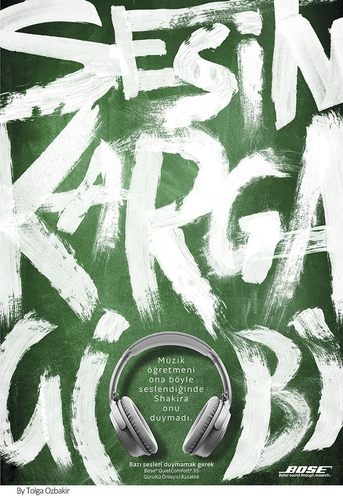

超现实主义这种梦幻、奇妙的组合效果，为现代设计提供了新的思路，使得视觉效果不同凡响，不论构思还是图形组合，都使人能够眼前一亮，留下深刻的印象。 超现实主义成为一种新的表现手段 -- 幻想。设计中运用幻想的表现手段，尽管有些荒诞、虚幻，但却合情合理，因而具有奇妙、独特的视觉效果。
超现实主义主要表现手法
超现实主义通常会制造出“反逻辑、超时空、怪诞感所产生的强烈视觉冲击，能激发受众的好奇心，给他们留下深刻的印象。现代许多设计都吸收和运用了超现实主义的特殊表现手法，来达到吸引和刺激人的目的。在现代设计中最主要的表现手法有：移花接木、夸张比例、象征隐喻、图、底关系。

移花接木
移花接木的表现手法是在设计中能够制造强烈视觉效果的表现手法之一，它将两种在现实生活中毫无关联的事物在画面中重新分解、组合，产生出一种设计师想要表达的新涵义。“采用摄影蒙太奇手法，将现实形象进行分解、组合、重叠和相融，产生出具有隐喻性的图形，在设计中创造了一种富有诗意的视觉传达方式。”将毫无关联的两种图形组合在一起，产生一种新奇的视觉效果。
夸张比例
超现实主义的另一种常用表现手法就是将主体图形与相对的组合图形的比例进行夸张，打破常规的视觉比例，从而刺激人的感官，产生出一种梦境般的奇异视觉效果，这对于现代设计来说无疑是一种极佳的设计表现手法，可以通过主体图形的奇特组合，迅速吸引眼球，从而表达出作品的主题内容。
象征隐喻
超现实主义在现代设计中的象征隐喻表现手法就是利用一种常见的主体图形来表达设计师的另一层思想内涵与潜在情感。 推荐阅读：如何运用关联法进行创作？
图、底关系
超现实主义中的图、底关系表现手法极具魅力，将图形与图形之间的空间和虚实关系处理得十分巧妙，物中有物，景中有景，使人产生无限的遐想。不再仅限于主体图形的展现，图、底关系产生的特殊视觉效果为现代设计提供了新颖的设计手法，使画面所传递的内容涵义深刻，富有创意。
超现实主义手法注意事项
各个艺术门类之间都具有相通性的特点，产生出了拟人比喻的夸张遐想，将超现实主义手法运用在设计中，其创意过程类似于戏剧创作的表现手法，主体图形相当于舞台上的主要演员，它们是主角，构图方式相当于舞台的背景和布局，而设计师则是全剧的导演，他们把握着画面的全局，用全新视角体会超现实主义的独特魅力。
超现实主义手法的深远影响为我们提供了新的设计思路，可以从设计的主要构成要素图形和构图两个方面进行分析，而设计中信息传递的成功与否也主要是通过这些方面进行展现，如果能够准确的把握，就能够迅速、明确地传递出所要表达的信息内容。
图形组合需有新意
就现代设计的图形组合而言，它是至关重要的一个构成要素，因为设计的主体部分就是图形，而图形与图形之间又产生了一种独立存在或者主次关系，图形的选用与组合方式在符合设计主旨的前提下，必需具有新意，反常规性，才能产生独特的视觉冲击效果，超现实主义中的移花接木手法充分掌握了人们的本能猎奇心理，对于非常态的事物组合往往具有一种非常强烈的好奇心理和新鲜感。
构图方式需突破常规
现代设计中的构图部分也是极为重要的构成要素之一，一幅优秀、经典的现代设计作品，如果不具备大胆、突破常规的构图方式，定会逊色不少，构图的方式相当于戏剧表演舞台上的背景摆放位置和布局，如果过于常规不仅不会烘托主题，还可能会削弱主题内容的表达和传递，因此在进行现代设计时采用超现实主义中的夸张和比例变形的手法，将会产生出人意料的视觉效果。
超现实主义手法是一种特殊的表现手法，我们不应在肤浅的表现层面停滞不前，而应通过这些丰富的表现手法，进一步表达出设计师想要对受众真正表达、传递的内容和信息，这种信息表达、传递的成功与否就在于受众是否通过画面获得了一种全新的感受或者引起了共鸣。

济南海右博纳品牌营销咨询有限公司
Copyright 2001-2019 All Rights Reserved Sivibrand.
王伟品牌顾问微信